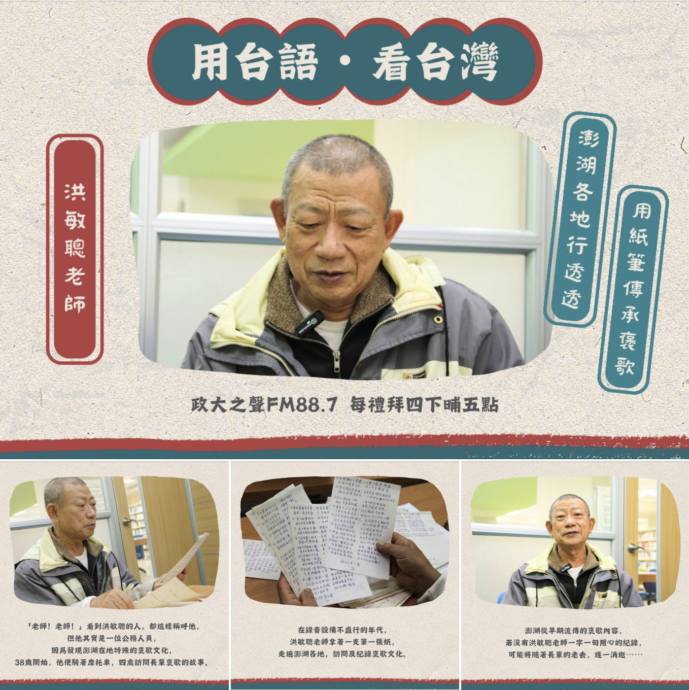

📌 本週主題
澎湖各地行透透 用紙筆傳承褒歌
🎧 內容簡介
- 🌊西北起雲做風颱，東港無船搖竹排
想著做人就海海，斤斤計較厄就來🌊 - 你知道什麼是褒歌嗎？
褒歌是早期由先民帶進台灣的一種娛樂文化，
先民會即興發揮，運用從古至今流傳下來的古調，
以七字成一句，兩句成一對，一首共四句的規則來互相對唱。
褒歌的內容包山包海，歌唱的主題都源自於「日常」✨
四面環海的澎湖，先民多以捕魚維生，
因而留有別具特色的海洋褒歌。
這一集邀請來自澎湖在地收錄褒歌的老師洪敏聰，與我們分享澎湖褒歌的特色，以及他從38歲開始，收錄褒歌的過程和故事。
請聽眾朋友跟著主持人的腳步，一起認識她的故鄉——澎湖！
作伙用心講台語，用台語看台灣👣